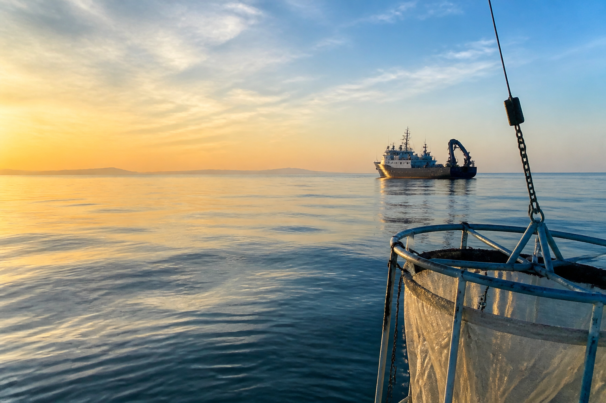
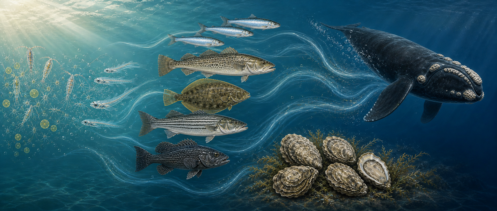

Research Scientist, Stony Brook University
School of Marine & Atmospheric Sciences.

Research Scientist, Stony Brook University
I study how climate variability, human pressures, and spatial structure shape aquatic species and ecosystems using state-space models, management strategy evaluation, and long-term monitoring data.
About me
I am Chengxue Li, a research scientist in the School of Marine & Atmospheric Sciences at Stony Brook University. My work integrates quantitative ecology, fisheries stock assessment, and aquatic ecosystem science to support conservation and natural resource management.
I combine statistical and simulation models with field sampling and empirical observations to examine how climate variability and human pressures influence the dynamics, resilience, and spatial structure of freshwater, estuarine, and marine ecosystems.

School of Marine & Atmospheric Sciences.
Developed and evaluated state-space stock assessment models and diagnostics.
Research in marine population dynamics, oyster recruitment, and ecosystem modeling.
Minor in statistics, with research on juvenile demersal fish habitat quality.
Ranked first in major.